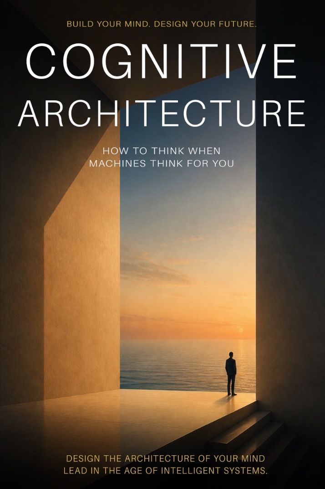
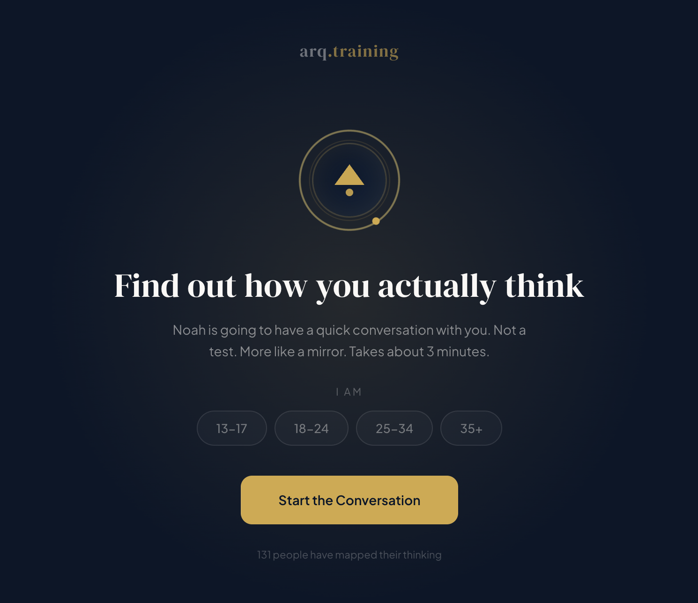

Cognitive Strategy / Speaking / Platform Development
Extracting the expert context inside your teams, upgrading how they think, and building systems that keep humans at the center of every decision.
The Thesis
The bottleneck is never the technology. It's the capacity of the humans using it. Extracting that expert context, upgrading how teams think, and keeping humans at the center of every system.
AI capability is growing exponentially. Human cognitive capacity is not growing at all. The distance between what your tools can produce and what your people can evaluate is the defining crisis of this decade.
When people outsource the process of thinking to AI, they don't just save effort. They prevent growth. Harvard research found that elite consultants relying on AI were 19 percentage points less accurate on tasks at the edge of its capabilities.
Our education system was designed in 1806 to produce compliant workers. AI now executes compliance faster than any human. Time to stop producing yesterday's thinkers and start building the thinkers the future actually needs.
AI literacy is horizontal. It spreads across the surface. What organizations actually need is vertical cognitive development: building the capacity to think above the tools, not just operate them.

A short guide for leaders who want to build organizations that actually think.
AI is not the bottleneck. The humans using it are. This book gives leaders a practical framework for closing that gap, building cognitive capacity, and keeping people at the center of every decision.
Portfolio
The research informs the products. The products test the research. Here's what's been shipping.

See how your students actually think.
The cognitive diagnostic layer education has never had. Curriculum goes in. Test scores come out. But what happens in between? arq.training makes the thinking process visible through an AI coach named Noah that works alongside students as they learn.
Context extraction for every company in the portfolio.
An AI-native CRM that captures the expert context inside each organization, surfaces the patterns that matter, and ensures every strategic conversation starts from a foundation of real intelligence. The same principle behind the thesis, turned into a working system.
The research organizations use to rethink their AI strategy.
Original research grounded in cognitive science, field data from 100+ organizations, and the economics of human-AI collaboration. From the Complexity Gap to Cognitive Offloading, these papers reframe how leaders think about technology adoption.
Speaking + Services
Half-day and full-day working sessions for leadership teams, educators, and organizations navigating AI adoption. Your team leaves with frameworks and same-day implementations. At least 1-2 use cases they can put to work before they leave the room.
Your organization acquired AI faster than your people can think with it. This session names the gap, shows the data, and gives your team a framework to close it.
The difference between AI that makes people dumber and AI that makes people sharper is one design decision. Building AI workflows that strengthen cognition instead of replacing it.
Training people to use tools that will be obsolete next quarter is a losing investment. The real investment is vertical: building the capacity to think above the tools.
Auditing where AI investment is outpacing your people's capacity to use it. Building a roadmap that closes the gap with better thinking, not more tools. Extracting the expert context your organization already has and turning it into a system.
From cognitive diagnostic platforms to AI-native CRMs, designing and shipping products that make organizations smarter while keeping humans at the center of every decision.
Published Work
All 24 pieces available in the full writing archive.
About Nathan
Nathan Critchett is a cognitive strategist who closes the gap between what AI can produce and what people can actually evaluate, apply, and lead with.
100+ organizations served. 8 research whitepapers and 16 articles on the future of human thinking. Two platforms designed and shipped. Thousands of leaders trained across the country.
Former D1 athlete. Former first responder. The same intensity applied to building thinkers the future needs. Work that sits at the intersection of cognitive science, AI strategy, and organizational performance.
Let's Work Together
Whether it's a professional development day for your team, a strategic engagement on cognitive capacity, or a conversation about what's coming next.